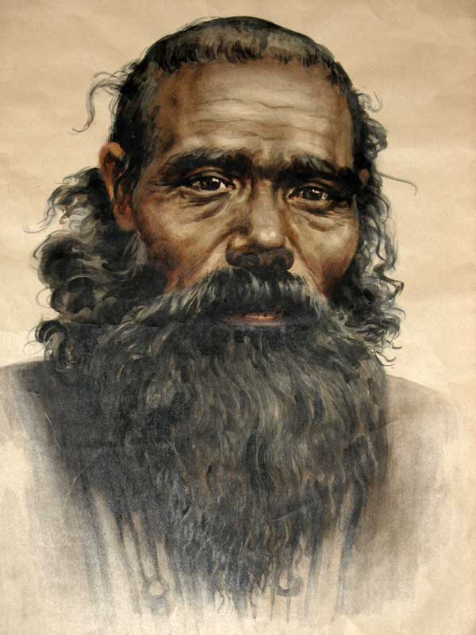
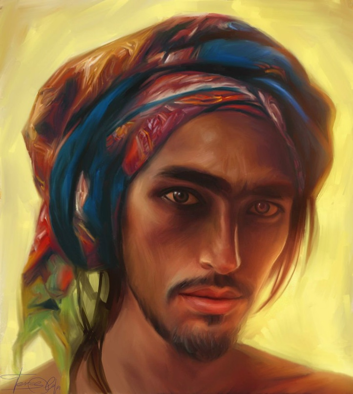

Население Поэдрума

Немного истории
По легенде, Поэдрум был изначально колонизован людьми, пришедшими с Гоэдроса, порядка двух-трёх сотен лет назад. Фактически все нынешние поэдрумцы — это смесь людей, живущих тут с незапамятных времён, и гоэдросцев, которые вступили в связь с коренным населением. Тем не менее жители острова практически не озабочены этим фактом: всех, кто родился и живёт тут, охотно признают «своим», вне зависимости от тона кожи, цвета волос и тому подобного.
Основной состав
Порядка 95% населения — люди. Иногда возможно встретить неклюдов или зверлингов, можно даже найти маглейдов или эльфинитов, но их популяция безбожно мала, хотя и имеет тенденцию расти в последнее время. Вараней и кеольцев на Поэдруме нет вообще — и к ним относятся довольно предвзято, хотя в случае необходимости и их могут взять под защиту.
В Эпоху Княжеств практически все феодалы были людьми — в свои армии наёмников они так же предпочитали набирать людей. Иные расы были представлены только в виде рабов, которые вкалывали на шахтах либо служили при князьях — часто всего для личных утех. Политика Ордена в отношении других рас была строга и непреклонна: пропаганда абсолютного социокультурного равенства вне зависимости от расы, пола и подобных факторов практически сразу загубила все тенденции к появлению расизма. Сейчас, когда Поэдрум стал раем для беглых рабов, большое количество нелюдей приплывает в качестве беженцев, которых встречают с большой охотой, как и беглых рабов-людей.
Никаких видов нежити на Поэдруме нет. А если и есть — они вынуждены очень хорошо скрываться, потому что за любым доказанным подозрением в связи с какой-либо потусторонней силой, кроме Демеса, наступает наказание в виде смертной казни.
Особенности внешности поэдрумцев-людей
Люди, родившиеся тут, обладают характерным набором хорошо узнаваемых черт. Один из основных — смуглая кожа: для людей с совершенно белой кожей жители Поэдрума будут казаться «вечно загоревшими», и загорелость передаётся генетически. Местные люди крайне редко обгорают на солнце: в процессе эволюции их тела приспособились к жаркому климату. Курчавые чёрные волосы — тоже одна из черт, хотя курчавость не обязательна, тёмный цвет волос — практически всегда. Характерен восточный выговор, хорошо узнаваемый в других местах.
Общество
Люди Поэдрума — крайне дружелюбный и приветливый народ, однако до недавнего времени только друг к другу. Горячий и импульсивный — в прошлом немало войн развязалось даже из-за неудачно сказанного слова. Жизнь в сложных условиях на юге с глубокой древности воспитала в них хитрость и бесстрашие, что вкупе с импульсивностью делало Поэдрум крайне воинственным по отношению к инородцам. Но под властью Ордена народ перестал негативно относиться ко всем другим расам и людям с других земель, провозгласив своим врагом всех, кто угнетает простых людей — знать, богачей и им подобных.
Живут поэдрумцы большими семьями, до 10 человек — родственные связи даже на уровне двоюродного дяди уже очень сильно сближают людей. Детей в таких семьях довольно много: именно поэтому даже после жестокого мора демографический баланс удалось очень быстро восстановить. Народ довольно гармонично относится к окружающей природе — и, пока это не доходит до шаманизма, Орден относится к этому нейтрально.
Самая известная традиция — правило «Не убей безоружного». Это считалось великим грехом, когда процветал шаманизм и вера в многочисленных духов; это считается величайшим преступлением и сейчас, когда монополию на веру держат демеситы. Даже казнят преступников, давая им в связанные намертво руки какой-нибудь заострённый камень. Исключение составляет только самооборона или битва с магами — но, поскольку волшебство и является их оружием, можно сказать, что правило это абсолютно во всём.
Основные занятия населения
После длительной Войны Освобождения большая часть населения подалась в армию — Орден лишь приветствовал это. Соседние Варейман и Гоэдрос могли бы воспользоваться слабостью острова, желая захватить эти богатые золотом земли. Воинственная риторика от них продолжается до сих пор, поэтому одну из основных задач — обеспечение безопасности и обороноспособности — Орден выполняет особенно рьяно.
В Ордене приблизительно 95 тысяч человек, в мобилизованной армии порядка полумиллиона — в мирное время не больше 100 тысяч. Большую армию необходимо грамотно кормить, и поэтому больше всего на острове именно земледельцев. Вторую нишу занимают военные, потом идут рудокопы, охотники, рыбаки, ремесленники, административные должности. Торговли как таковой на Поэдруме нет, однако из-за того, что большая часть сырья идёт через порты, имеется большая нужда в перевозках грузов.
Численность населения
Всего: 24 430 728, по последней переписи населения. Люди: 23 209 191; дварфы: 56 529; неклюды: 281 637; ювары: 413 695; эльфиниты: 356 394; маглейды: 69 376; кеольцы: 43 906.

География Мериона · Поэдрум · Население